이 페이지는 쿠팡 파트너스 활동의 일환으로, 이에 따른 일정액의 수수료를 제공받습니다.
살림템 정리노트
@salimtem.note · 살림·자취 생활템 (주방·수납·청소, 1~5만 원대)
번호는 Instagram 글에 적힌 번호와 같아요. 가격·재고는 쿠팡에서 다시 확인해 주세요.
💸 오늘의 토스 특가 가격·재고는 토스에서 다시 확인해 주세요
이 포스팅은 토스쇼핑 쉐어링크 활동의 일환으로, 이에 따른 일정액의 수수료를 제공받습니다.
모나리자 에코 미용티슈, 300매, 12입, 1박스
16,400원 (10매당 약 46원) · ★ 4.7 (6,488) · 확인 시각 10-23 18:05
토스쇼핑에서 보기 (광고)수뜰리에 퍼퓸 고체 탈취제, 데이지향, 310g, 2개
14,800원 (1개당 7,400원(100g당 약 2,388원)) · ★ 4.7 (7,768) · 확인 시각 10-23 10:43
토스쇼핑에서 보기 (광고)베라 무해력 4ZERO 뽑아쓰는 미용티슈, 250매, 6팩
6,390원 (1매당 약 4원(1,500매)) · ★ 4.6 (4,008) · 확인 시각 10-23 10:43
토스쇼핑에서 보기 (광고)30일 내 최저가
수뜰리에 섬유유연제 소프트 비누향, 2.5L, 4개
8,900원 (100ml당 약 89원) · ★ 4.6 (11,855) · 확인 시각 10-23 10:40
토스쇼핑에서 보기 (광고)수뜰리에 고농축 섬유유연제 코튼캔디, 2.5L, 4개
8,900원 (100ml당 약 89원) · ★ 4.6 (4,157) · 확인 시각 10-23 10:40
토스쇼핑에서 보기 (광고)수뜰리에 쉰내제거 딥클린 세탁세제, 코튼캔디, 2.5L, 4개
8,900원 (100ml당 약 89원) · ★ 4.6 (10,043) · 확인 시각 10-23 10:40
토스쇼핑에서 보기 (광고)🔎 사기 전 비교 유튜브 비교 영상에서 오셨다면 여기
곰팡이 제거제 비교
- 타일·줄눈 곰팡이는 유한락스 곰팡이제거제 900ml 2개(9,450원, 100ml 525원)가 가장 싸고 별점 1~3점 상품평 20개 중 효과 불만은 4개뿐이었어요. 대신 13개가 용기·분사 불량 얘기였어요.
- 뿌리는 스페시핏 2개는 토스쇼핑에서 7,800원이에요. 쿠팡의 '스페시핏 초강력' 2개는 17,800원인데, 별점 1~3점 20개 중 14개가 곰팡이가 안 지워진다는 불만이라 이름값보다 가격으로 접근하는 게 맞아요.
- 붓으로 바르는 청정세상은 실리콘·줄눈 구석용인데, 벽지에 쓰면 변색된다는 상품평이 있어 벽지에는 피하세요.
방풍비닐 추천 비교
- 창문을 겨우내 닫아 둘 거면 쾌청 0.5mm 벨크로 일체형. 두껍다는 칭찬이 많지만, 별점 1~3점 상품평 20개 중 10개가 재단 치수, 6개가 비닐 냄새 얘기였어요.
- 라워스 자석 방풍비닐은 열고 닫기 편한 대신 설치가 어려워요. 별점 1~3점 20개 중 11개가 설치, 10개가 자석 고정력 불만이었어요.
- 현관·세탁실처럼 사람이 드나드는 곳이면 하루꿈 자석 현관 커튼(100×220cm 13,900원)이에요.
수뜰리에 세탁세제 토스 8,900원 vs 쿠팡 16,000원
- 수뜰리에 쉰내제거 딥클린 세탁세제 2.5L×4는 같은 구성이 쿠팡 16,000원, 토스쇼핑 8,900원이라 수뜰리에를 살 거면 토스가 7,100원 쌌어요.
- 바른세탁소 액체세제 라임향 2.5L×4는 토스쇼핑 9,900원(100ml 99원)으로 수뜰리에보다 1,000원 비싸요.
- 리퀴드 라벤더 2.5L×4는 쿠팡 7,850원(100ml 79원)으로 가장 싸지만, 별점 1~3점 상품평 20개 중 8개가 세척력, 4개가 묽다는 불만이었어요.
붙이는 핫팩 비교
- 1장 가격만 보면 불도깨비 42g(30개 4,590원, 1장 153원)이 가장 싸요. 다만 별점 1~3점 20개 중 6개가 잘 떨어진다, 2개가 저온 화상 얘기였어요.
- 출근길에 등·허리에 붙이고 하루 버틸 거면 하루온 50g(30장 10,780원, 1장 약 359원). 상품평이 52,442개로 가장 많고, 별점 1~3점은 미지근하다는 말이 20개 중 8개였어요.
- 해피데이 파스형은 1장 265원으로 싸지만 별점 1~3점 20개 중 9개가 '잘 떨어진다'였어요. 움직임이 많은 날엔 피하세요.
김장매트 추천 비교
- 크기는 '포기 수' 표기를 그대로 믿지 말고 한 치수 작게 잡아도 돼요. 큰 사이즈를 샀다가 집에서 쓰기 너무 크다는 상품평이 여러 제품에서 반복됐어요.
- 단단한 테두리가 중요하면 조앤제이 무봉제(60cm 14,800원~180cm 23,800원). 다만 별점 1~3점 상품평 7개 중 3개가 마감·구멍, 2개가 물샘 얘기였어요.
- 싸게 한 번 쓸 거면 깨끗한데이 퓨어 GB나 스마일. 퓨어는 별점 1~3점 20개 중 5개가 흐물거린다, 스마일은 3개가 금방 찢어졌다고 했어요.
베라 4ZERO 미용티슈 250매 6팩 토스쇼핑 6,390원 vs 쿠팡 10,400원
- 베라 4ZERO 뽑아쓰는 미용티슈 250매 6팩은 토스쇼핑 6,390원으로 10매당 약 43원이라 이번에 본 미용티슈 중 한 번에 내는 돈이 가장 적고, 같은 구성이 쿠팡보다 4,010원 쌌어요.
- 모나리자 에코 미용티슈 300매 12입은 토스쇼핑 16,400원으로 10매당 약 46원이고, 쿠팡 모나리자 천연펄프 300매 12개 18,430원보다 2,030원 싸지만 상품명이 달라 같은 제품인지는 확인하지 못했어요.
- 잘풀리는집 리얼실키 250매 6개는 쿠팡 10,560원으로 10매당 70원이고 상품평이 18만 개가 넘지만, 별점 1~3점 20개 중 4개가 기대보다 거칠다고 했어요.
🎬 영상 속 준비물 쇼츠에서 보고 오셨다면 여기
삼겹살 먹고 나서 사흘째 냄새
섬유탈취제
쿠팡에서 섬유탈취제 보기 (광고)빨았는데도 수건에서 쉰내
과탄산소다
쿠팡에서 과탄산소다 보기 (광고)음쓰 '내일 버려야지' 하다가 생긴 일
밀폐 음식물쓰레기통
쿠팡에서 밀폐 음식물쓰레기통 보기 (광고)번호별 추천
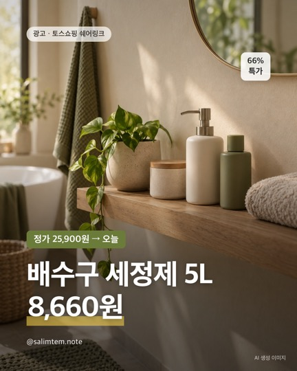
배수구 세정제 5L 8,660원
- 이 포스팅은 토스쇼핑 쉐어링크 활동의 일환으로, 이에 따른 일정액의 수수료를 제공받습니다.
- 정가 25,900원짜리가 오늘 8,660원.
- 17,240원 빠진 거라 그냥 지나치기 아까워서 들고 옴.
- 피죤 드릴펑 1L 3개 + 2L 1개, 합쳐서 5L
피죤 드릴펑 1L 3개 + 2L 1개
토스쇼핑에서 가격·후기 보기 (광고)원문 글 보기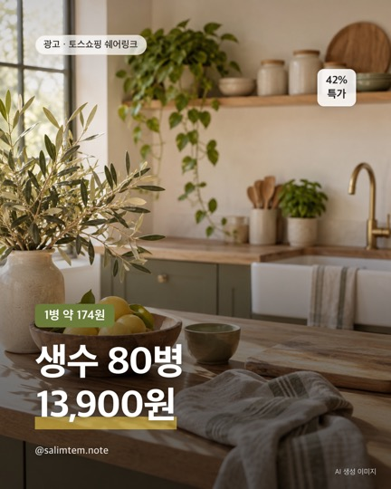
생수 80병 13,900원
- 이 포스팅은 토스쇼핑 쉐어링크 활동의 일환으로, 이에 따른 일정액의 수수료를 제공받습니다.
- 🔥 스파클 생수 무라벨 500ml 80병 → 13,900원
- 1병에 약 174원이에요
- 토스쇼핑 표시 42% 특가
스파클 생수 무라벨 500ml 80개
토스쇼핑에서 가격·후기 보기 (광고)원문 글 보기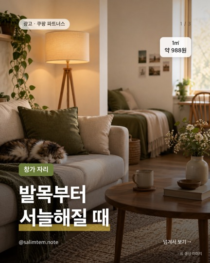
발목부터 서늘해질 때
- 뽁순이 3중 1×10m · 9,880원 · 1㎡ 약 988원
- 탐사 빛차단 1×2.2m 3장 · 11,990원 · 1㎡ 약 1,817원
- 뽁순이 반투명
- 탐사 블랙(빛차단)
뽁순이 3중 뽁뽁이 단열에어캡 1x10m
쿠팡에서 가격·후기 보기 (광고)원문 글 보기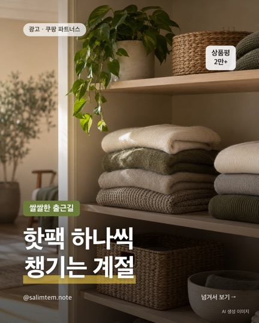
핫팩 하나씩 챙기는 계절
- 충성 30개 · 1개 480원
- 충성 60개 · 1개 약 469원
- 마이핫 30개 · 1개 750원
- 유통기한 2027-05 이후 표기
충성 포켓용 핫팩 대형 160g 30개
쿠팡에서 가격·후기 보기 (광고)원문 글 보기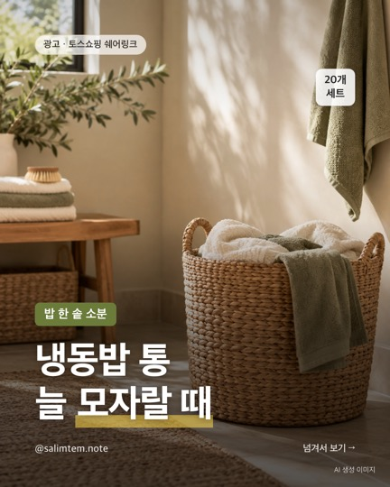
냉동밥 통 늘 모자랄 때
- 350ml 12개 · 밥 한 공기
- 700ml 8개 · 국 한 끼
- 20개 13,900원
- 1개 약 695원
맥스앤맥스 이지밀 냉동밥&국 소분 밀폐용기 20개 세트
토스쇼핑에서 가격·후기 보기 (광고)원문 글 보기키친타올 두세 장씩 쓸 때
- 4롤 10매당 114원
- 8롤 10매당 약 106원
- 1롤 1,590원 vs 1,478원
- 자주 쓰면 묶음이 유리
크리넥스 안심 3겹 키친타올 140매 4롤
쿠팡에서 가격·후기 보기 (광고)원문 글 보기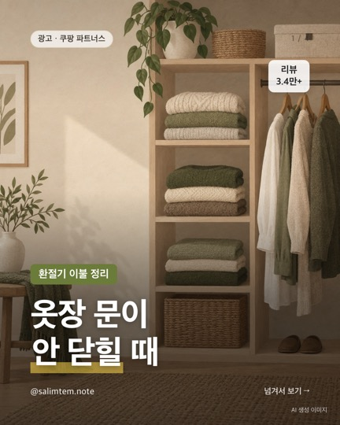
옷장 문이 안 닫힐 때
- 4개입 1장 1,490원
- 5개입 1장 1,458원
- 차이는 1장 32원
- 개수는 이불 수대로
코멧 이불 압축팩 4개입 중형(70×100cm)
쿠팡에서 가격·후기 보기 (광고)원문 글 보기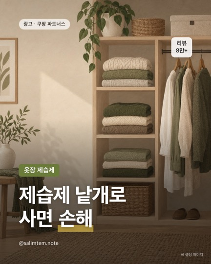
제습제 낱개로 사면 손해
- 제습제 낱개로 사다가 1개에 3,800원 넘게 낸 사람 손✋
- 옷장 문 열면 눅눅한 냄새 올라오는 시기라 몇 개씩 사게 되는데
- 물먹는하마 옷장용 300g은 낱개 3,810원, 16개 묶음은 20,520원이라 1개당 1,283원
- 10/6 19시 확인 기준(바뀔 수 있어요)
물먹는하마 습기제거제 옷장용, 300g, 16개
쿠팡에서 가격·후기 보기 (광고)원문 글 보기반도 못 채우고 냄새부터 나는 집
- 첫 페이지 10개 중
- 냄새 얘기 8건
- '얇다' 3건
- 오래 두면 약해짐 2건
코멧 생분해 음식물쓰레기 봉투 1L 50매
쿠팡에서 가격·후기 보기 (광고)원문 글 보기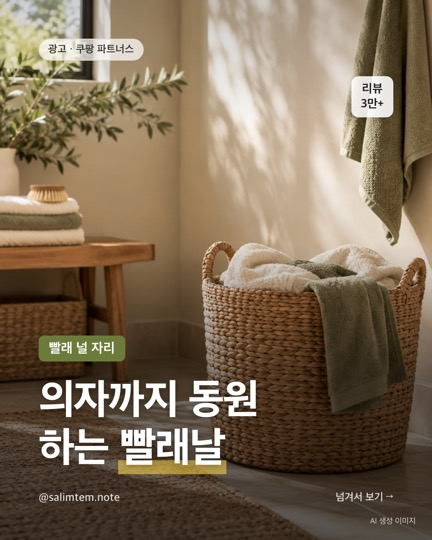
의자까지 동원 하는 빨래날
- 첫 페이지 10개 중
- 옮기기·이동 9건
- 접어서 보관 8건
- 조립 언급 7건
코멧 이동접이식 빨래건조대 특대형
쿠팡에서 가격·후기 보기 (광고)원문 글 보기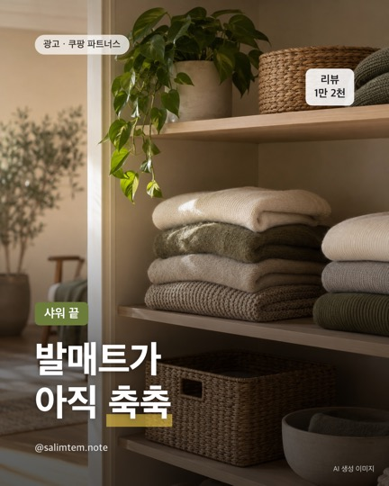
발매트가 아직 축축
- 샤워하고 나왔는데 발매트가 아직 축축해서 까치발 드는 거 국룰임?ㅋㅋ
- 발매트는 두 장 돌려 쓰면 하나 빠는 동안에도 안 비어 있음
- 코멧 홈 메모리폼 발매트, 미끄럼방지 표기
- 10/5 저녁 확인 기준 7,490원(바뀔 수 있어요)
코멧 홈 메모리폼 발매트
쿠팡에서 가격·후기 보기 (광고)원문 글 보기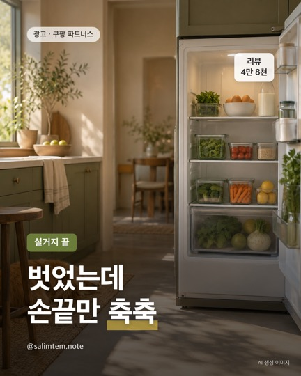
벗었는데 손끝만 축축
- 설거지 끝나고 고무장갑 벗었는데 손끝만 축축한 거, 다들 겪지?ㅋㅋ
- 한 켤레만 계속 끼면 안쪽 마를 틈이 없음. 그래서 두세 켤레 번갈아 쓰는 집 많더라
- 프로그 라텍스 컴포트 고무장갑 중(M) 3세트
- 10/5 저녁 확인 기준 4,280원, 한 세트 1,427원꼴(바뀔 수 있어요)
프로그 라텍스 컴포트 고무장갑 중(M) 3세트
쿠팡에서 가격·후기 보기 (광고)원문 글 보기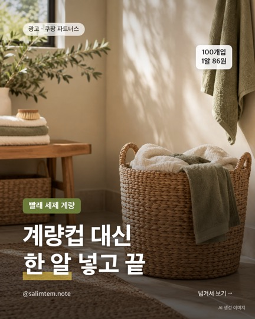
계량컵 대신 한 알 넣고 끝
- 첫 페이지 10개 중
- '향' 언급 10건
- '찬물' 언급 5건
- '재구매' 언급 5건
맘스럽 울트라 퍼퓸 캡슐세제 16g × 100개입
쿠팡에서 가격·후기 보기 (광고)원문 글 보기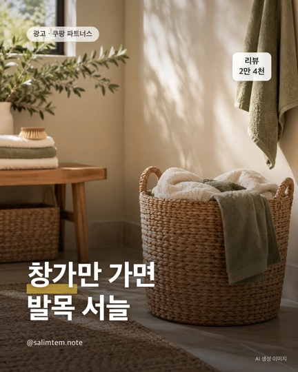
창가만 가면 발목 서늘
- 창가에만 가면 발목이 서늘한 집 손✋
- 보일러 틀기엔 이르고 그냥 있긴 추운 딱 지금 시기
- 창문에 뽁뽁이 한 겹 붙이는 집 많더라
- 탐사 국내생산 단열뽁뽁이 10m
탐사 국내생산 단열뽁뽁이 에어캡 무지, 10m, 1개
쿠팡에서 가격·후기 보기 (광고)원문 글 보기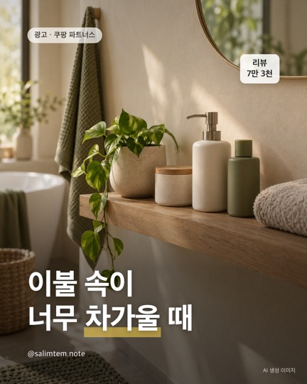
이불 속이 너무 차가울 때
- 자려고 누웠는데 이불 속이 차가워서 발 동동 구르는 사람 손✋
- 보일러 대신 전기요부터 꺼내는 집 은근 많음ㅋㅋ
- 한일 탄소열선 전기요 HL-D205, M(100×180cm)
- 29,800원(10/3 확인, 바뀔 수 있어요)
한일 탄소열선 고급 전기요 HL-D205(25), M 100×180cm
쿠팡에서 가격·후기 보기 (광고)원문 글 보기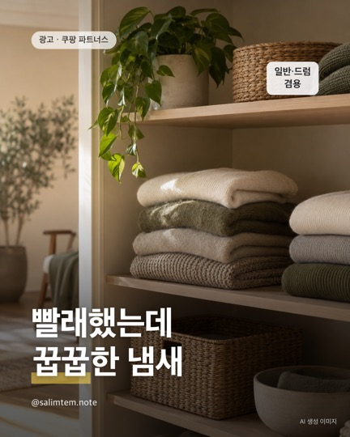
빨래했는데 꿉꿉한 냄새
- 빨래 다 했는데 수건에서 꿉꿉한 냄새 나는 거 나만 그럼?
- 세탁기 통 청소 마지막으로 언제 했는지 기억 안 나면 손✋
- 피지 모락셀라 세탁조 클리너 (일반·드럼 겸용) 2개입
- 10,900원(10/3 확인, 바뀔 수 있어요) · 별점 4.8
피지 모락셀라 세탁조 클리너 일반드럼 겸용 2p, 200g
쿠팡에서 가격·후기 보기 (광고)원문 글 보기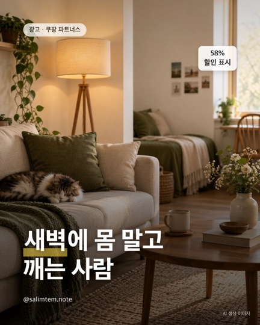
새벽에 몸 말고 깨는 사람
- 여름 이불 덮고 자다가 새벽에 몸 말고 깨는 사람 손✋
- 이불 바꿀 타이밍 딱 지금임ㅋㅋ
- 코멧 홈 양면 극세사 차렵이불
- 19,990원, 58% 할인 표시(10/3 확인, 바뀔 수 있어요)
코멧 홈 양면 극세사 솔리드 차렵이불
쿠팡에서 가격·후기 보기 (광고)원문 글 보기짧게 쓰고 바로 버리는 용도
- 상품평 1.5만+, 5점 81%
- 낮은 별점 40개 읽음
- '금방 부서짐' 29건
- '얇다·작다' 8건
코멧 매직블럭 중형 100개
쿠팡에서 가격·후기 보기 (광고)원문 글 보기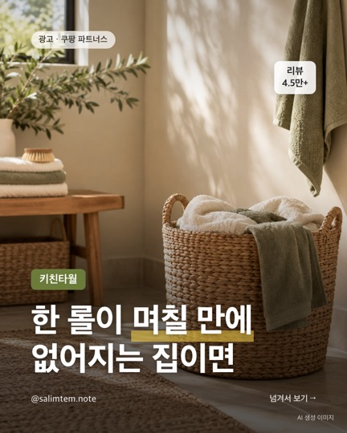
한 롤이 며칠 만에 없어지는 집이면
- 빨아 쓰는 1겹 · 무형광
- 72매 × 6롤
- 상품평 45,066개
- 제조국 대한민국
크리넥스 빨아쓰는 위생행주 블루, 72매, 6개
쿠팡에서 가격·후기 보기 (광고)원문 글 보기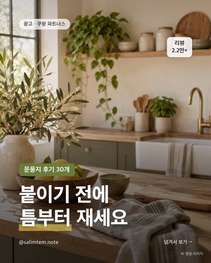
붙이기 전에 틈부터 재세요
- 두꺼워 문 안 닫힘 4건
- 개봉 냄새 났다 5건
- 냄새 거의 없다 3건
- 베스트 후기 30개 기준
바로문풍지 사계절 우레탄 국내 생산 문풍지 9mm x 18mm x 3m
쿠팡에서 가격·후기 보기 (광고)원문 글 보기햇반 대신 작은 압력솥
- 베스트 50개 중 체험단 46
- '빨리·금방 됨' 44건
- '연마제 닦기' 14건
- '인덕션' 언급 19건
코코리 스피드 압력솥 3인용, 1.2L, 실버 + 블랙 + 우드
쿠팡에서 가격·후기 보기 (광고)원문 글 보기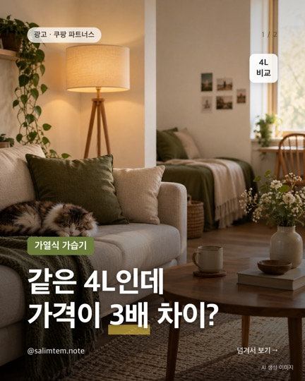
같은 4L인데 가격이 3배 차이?
- 시즌드림 유리 4L · 9만 원대
- 내열 유리 수조 · 상부급수 · 분무량 조절
- 조지루시 4L · 30만 원대
- 소비전력 680W · 타이머
조지루시 가열식 가습기 4L EE-DVH35K
쿠팡에서 가격·후기 보기 (광고)원문 글 보기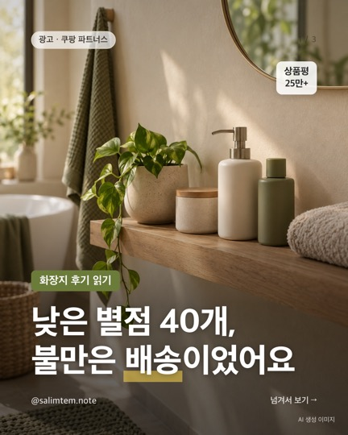
낮은 별점 40개, 불만은 배송이었어요
- 도톰 언급 46건 / 50
- 먼지 날림 적다 32건
- 1~2점 중 배송·포장 32건
- 물에 안 풀림 2건 / 40
깨끗한나라 순수 프리미엄 더 퍼스트 천연펄프 3겹 고급롤화장지 30m × 30롤
쿠팡에서 가격·후기 보기 (광고)원문 글 보기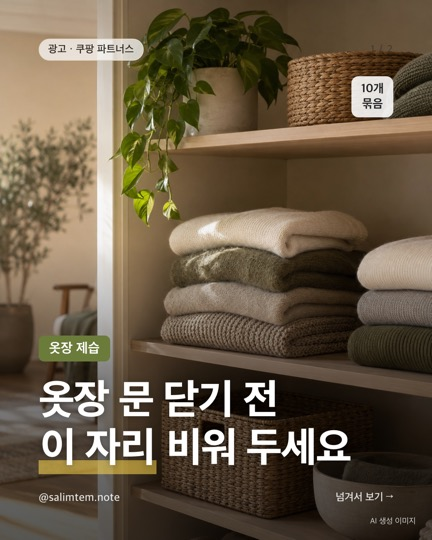
옷장 문 닫기 전 이 자리 비워 두세요
- 옷봉 있는 옷장·행거 → 걸이형
- 봉 없는 서랍장 → 서랍형
- 두꺼운 옷 사이사이에 나눠 걸기
- 교체 날짜를 적어 두기
탐사 옷걸이형 제습제, 200g, 10개
쿠팡에서 가격·후기 보기 (광고)원문 글 보기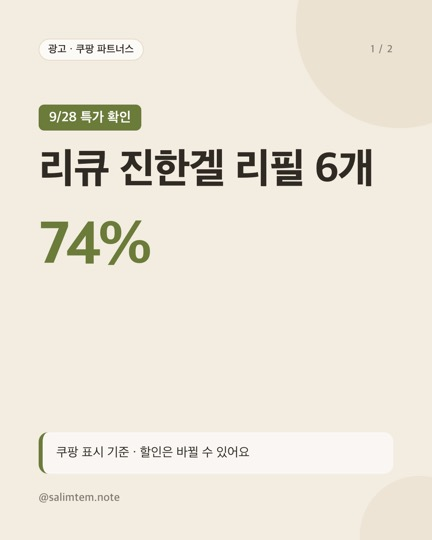
리큐 진한겔 리필 6개
- 오늘(9/28) 쿠팡 골드박스에 리큐 진한겔 리필 2.1L×6개 74% 할인 떠 있어요.
- · 76,800원 → 약 19,360원 (와우할인 표시, 와우회원 기준)
- · 파우치 리필 6개 총 12.6L, 일반·드럼 공용 액체형
- · 3개 옵션(16,900원)과 6개 가격 차이는 2,460원
리큐 진한겔 프레쉬 런드리향 일반드럼겸용 액상세제 리필 2.1L × 6개
쿠팡에서 가격·후기 보기 (광고)원문 글 보기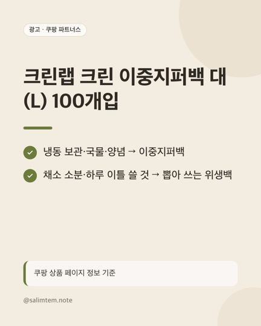
크린랩 크린 이중지퍼백 대(L) 100개입
- 냉동실 정리하다 보면 지퍼백이 제일 빨리 떨어지죠.
- 사실 전부 지퍼백일 필요는 없어요. 역할을 나누면 덜 써요.
- · 냉동 보관·국물·양념 → 이중지퍼백
- (크린랩 이중지퍼백 L 100매, 냉동/냉장 겸용, 1매당 110원대)
크린랩 크린 이중지퍼백 대(L) 100개입
쿠팡에서 가격·후기 보기 (광고)원문 글 보기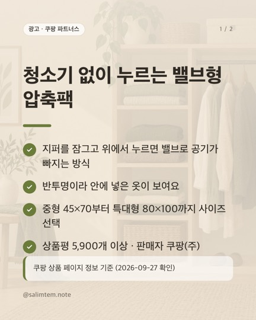
청소기 없이 누르는 밸브형 압축팩
- 지퍼를 잠그고 위에서 누르면 밸브로 공기가 빠지는 방식
- 반투명이라 안에 넣은 옷이 보여요
- 중형 45×70부터 특대형 80×100까지 사이즈 선택
- 상품평 5,900개 이상 · 판매자 쿠팡(주)
리브맘 청소기없이 5초 맨손 의류용 압축팩 (5개입, 중형)
쿠팡에서 가격·후기 보기 (광고)원문 글 보기